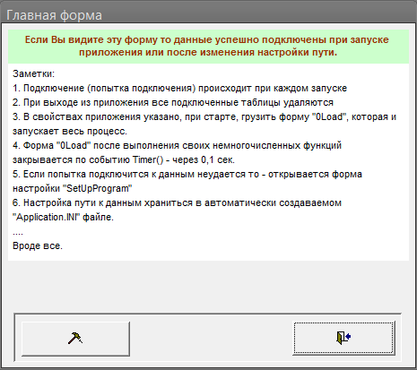
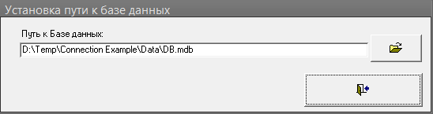

Public Function esConnectAllTables(ByRef strFilePath As String, Optional ByRef strPrefix As String = "") As Long
'es 11.03.2013
'Подключение всех таблиц указанного файла MDB (кроме скрытых и системных)
'Аргументы:
' strFilePath = Путь к файлу
' strPrefix = Префикс местного названия таблицы
'Функция при возникновении ошибки возвращает ее код
'--------------------------------------------------------------------
Dim strLink As String
Dim db As DAO.Database
Dim tdf As DAO.TableDef
Dim x As Long
On Error GoTo ConnectAllTablesErr
Set db = DBEngine.OpenDatabase(strFilePath)
strLink = ";DATABASE=" & strFilePath
For Each tdf In db.TableDefs 'Перебор всех таблиц в указанной базе
If tdf.Attributes = 0 Then 'Если не скрытая и не системная = подключаем ...
x = esConnectToTable(strLink, tdf.name, strPrefix & tdf.name)
If x <> 0 Then 'Если ошибка = На ВЫХОД!
esConnectAllTables = x
Exit For
End If
End If
Next tdf
CurrentDb.TableDefs.Refresh
esConnectAllTables = x
ConnectAllTablesBye:
On Error Resume Next
db.Close
Set db = Nothing
Err.Clear
DoEvents
Exit Function
ConnectAllTablesErr:
esConnectAllTables = Err.Number
'Debug.Print Err.Description
Resume ConnectAllTablesBye
End Function
Public Function esConnectToTable(strBaseLink As String, _
sourseName As String, _
Optional newName As String = "", _
Optional makeHidden As Boolean = False) As Long
'es 25.11.04
'Подключение указанной таблицы по аргументам:
' strBaseLink = строка подключения вида: ";DATABASE=C:\DB.mdb"
' sourseName = Исходное название таблицы в базе
' makeHidden = Сделать скрытой (по умолч. = нет)
' newName = Новое имя таблицы (по умолч. = sourseName)
'При ошибке возвращает ее код
'--------------------------------------------------------------------
Dim db As DAO.Database
Dim tdf As DAO.TableDef
'Имя создаваемой таблицы
If newName = "" Then newName = sourseName
'Удаление старой (если есть)
On Error Resume Next
Set db = CurrentDb
db.TableDefs.Delete newName
Err.Clear
'Создание и подключение
On Error GoTo ConnectToTableErr
Set tdf = db.CreateTableDef(newName)
tdf.Connect = strBaseLink
tdf.SourceTableName = sourseName
db.TableDefs.Append tdf
'если указано что должна быть скрытая
If makeHidden = True Then
Application.SetHiddenAttribute acTable, tdf.Name, True
End If
ConnectToTableBye:
On Error Resume Next
Set tdf = Nothing
Set db = Nothing
Err.Clear
Exit Function
ConnectToTableErr:
esConnectToTable = Err.Number
'Debug.Print Err.Description
Resume ConnectToTableBye
End Function
Пример
По умолчанию приложение ищет данные в фиксированной подпапке
относительно себя (в данном случае подпапка: "DATA"), если не находит,
то запрашивает новый путь и запоминает его для будущего использования.



MSA-2003 ( 138 kB) Пример